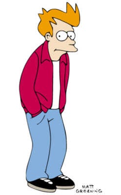

Головний герой мультсеріалу Футурама (в оригінальній версії озвучений Біллі Уест ), невдаха і нероба. Фрай - хлопець з XX століття, який працював рознощиком піци, який прокинувся в XXX столітті після того, як випадково потрапив в криогенну камеру і був заморожений напередодні 1 січня 2000 року. У серіалі згадується його вік - 25 років. Ім'я Філіп було дано Фраю Меттом Грейнінг в пам'ять про Філе Хартманн, який був відібраний для озвучування серіалу, але загинув ще до початку роботи.
